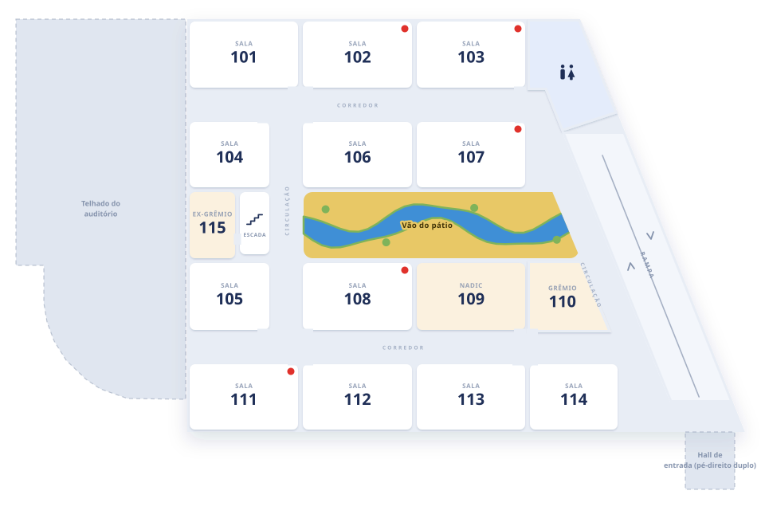
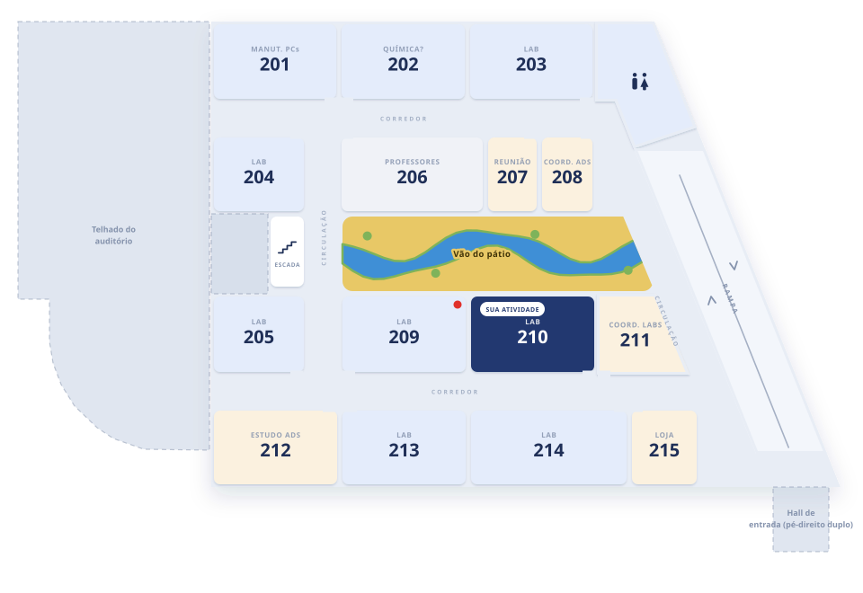

01 / AberturaETAL / Connect
ETAL Connect
Proposta de aplicativo para o ETAL · IFRN Pau dos Ferros
01 / AberturaETAL / Connect

Já começou?Onde é a sala?Como confirmo a presença?
02 / Para o participanteETAL / Connect

02
Capítulo 02
Para o participante
Entra com o SUAP e recebe o cracháMonta a agendaLê o QR da sala e confirma a presençaRecebe a troca de sala na horaMateriais depois da presençaConquistas e contatosAchar a sala
02 / Para o participanteETAL / Connect
Para o participante
1
Entra com o SUAP e recebe o crachá
- 1Entra com o SUAP e recebe o crachá
- 2Monta a agenda
- 3Lê o QR da sala e confirma a presença
- 4Recebe a troca de sala na hora
02 / Para o participanteETAL / Connect
2
Monta a agenda
- 1Entra com o SUAP e recebe o crachá
- 2Monta a agenda
- 3Lê o QR da sala e confirma a presença
- 4Recebe a troca de sala na hora
02 / Para o participanteETAL / Connect
3
Lê o QR da sala e confirma a presença
- 1Entra com o SUAP e recebe o crachá
- 2Monta a agenda
- 3Lê o QR da sala e confirma a presença
- 4Recebe a troca de sala na hora
02 / Para o participanteETAL / Connect
4
Recebe a troca de sala na hora
- 1Entra com o SUAP e recebe o crachá
- 2Monta a agenda
- 3Lê o QR da sala e confirma a presença
- 4Recebe a troca de sala na hora
02 / Para o participanteETAL / Connect
Materiais depois da presença
- Lê o QR da sala
- A presença é confirmada
- Slides e arquivos liberados
- Avalia a atividade
Proposta · hoje com materiais de exemplo
02 / Para o participanteETAL / Connect
Conquistas e contatos
02 / Para o participanteETAL / Connect
Achar a sala
- Busca a sala, o banheiro ou o bebedouro
- Rota a pé desde a portaria
- Escada ou rampa, andar por andar
03 / Organização e presençaETAL / Connect

03
Capítulo 03
Organização e presença
Painel da organizaçãoPresença: QR na portaPresença: QR na tela, mudandoPresença: a equipe lê o QR
03 / Organização e presençaETAL / Connect
Painel da organização
312credenciados
82na sala agora
96visitantes
Mudança de salaReact Native agora no Lab 210
Enviar a todosPresenças em CSV → certificados no SUAP

Mudança de salaReact Native agora no Lab 210
Mudança de salaReact Native agora no Lab 210
Mudança de salaReact Native agora no Lab 210
03 / Organização e presençaETAL / Connect
Presença: QR na porta
 Lab 210
Lab 210Presença confirmada
foto do QR
em casa
Também confirma
Já funciona no app · método principal
Simples, sem equipe na salaA foto do QR funciona durante a aula (as verificações a mais fecham a brecha)
03 / Organização e presençaETAL / Connect
Presença: QR na tela, mudando
muda a cada 30 sPresença confirmada
foto do QR
em casa
QR vencido
Sugestão: camada a mais
A foto chega vencidaPrecisa de uma tela ligada na sala
03 / Organização e presençaETAL / Connect
Presença: a equipe lê o QR
ASAna BeatrizQR pessoal, muda a cada 30 s
QR pessoal, muda a cada 30 sequipe do credenciamento
Ana Beatriz · confirmada
print do QR
Não vale: código vencido
Sugestão: camada a mais
Alguém vê quem está na salaPrecisa de uma pessoa por sala
04 / Próximos passosETAL / Connect
Da planta de 2012 ao mapa
 Souza, 2012 · figura 9
Souza, 2012 · figura 9



- A planta de 2012dissertação da UFRN
- Traçada por cimaparedes, portas e corredores
- Salas com uso e númerocada ambiente vira dado
- Três andareso prédio sobe em 3D
- O mapa do approtas, andares e busca
05 / Apêndice técnicoETAL / Connect

05
Capítulo 05
Apêndice técnico
Como as peças se ligamO banco de dadosComo a presença é validadaPor que PWASem internetComo a rota é calculadaEscada ou rampa?API documentada
05 / Apêndice técnicoETAL / Connect
Como as peças se ligam
- As peçascelular, API, banco e SUAP
- Logino SUAP confirma quem é
- Presençado QR ao banco e ao painel
- Avisodo painel para todos os celulares
05 / Apêndice técnicoETAL / Connect
O banco de dados
Pessoaparticipante, visitante ou organizaçãoMaria Clara · 2023109401…
Agendasalvou a atividadeMaria → React Native
Presençaleu o QR na sala14:22 · via QR
Atividadehorário, sala e vagasReact Native · Lab 210
Avisoda organização“Minicursos às 14:00”
Número de salanome de cada sala002 → Lab 210
Link de acessoentrada do visitanteválido por 7 dias
- As tabelassete, no PostgreSQL
- Salva a atividadePessoa → Agenda → Atividade
- Lê o QRPessoa → Presença → Atividade
- A organizaçãoavisos, salas e acessos
05 / Apêndice técnicoETAL / Connect
Como a presença é validada
etal.app/q/eyJhIjoicmVhY3QtbmF0aXZlIn0.-vsAoqlqItwK3f…
conteúdo (base64: qualquer um lê){ "a": "react-native" }
assinaturaHMAC(chave secreta do servidor, conteúdo)
Maria Claramatrícula 2023109401…
sessão do SUAP
sessão do SUAP
API
eyJhIjoicmVhY3Qt…recalculada com a chave: igual
eyJhIjoiZ2l0In0…alguém trocou a atividade: não confere
14:22 ✓19:10 ✗13:4518:00
Vale 15 min antes do início até o fim. A foto do QR mandada depois não vale.
- Rede do IFRNconectado ao Wi-Fi do campus (eduroam)proposta
- Perto da salalocalização do celular junto do blocoproposta
- Aparelho únicoo mesmo celular não registra duas pessoasproposta
- Ficou na atividadeleitura na entrada e na saídaproposta
- Cabe na salapresenças acima da lotação acendem alertaproposta
14:22 · presença registrada
14:31 · leu de novojá registrada, nada muda
| Nome | Matrícula | Atividade | Hora | Rede |
|---|---|---|---|---|
| Maria Clara F. | 2023109401… | React Native | 14:22 | IFRN |
| Ana Paula R. | 2022109404… | React Native | 14:23 | IFRN |
| João F. Morais | 2023109000… | React Native | 14:23 | IFRN |
| Rodrigo F. | 2021109402… | React Native | 14:25 | IFRN |
| Luana Freitas | 2024109401… | React Native | 14:26 | IFRN |
Lista de assinaturapassa de mão em mão e é digitada depoisQR → planilha2 s por pessoa, pronta para o Excel
QR na tela, mudandoa cada 30 s: a foto chega vencida
A equipe lê o QR do cracháalguém vê quem está na sala
O QR de papel é o principal. Estas duas ficam como camada a mais, para atividades que pedirem.
- O QR na portapapel impresso, um por sala
- O que tem dentrodá para ler, não dá para falsificar
- Quem leua conta do SUAP no celular
- A assinatura confereo servidor refaz a conta
- Dentro do horáriosó vale durante a atividade
- Mais verificaçõesrede, lugar e aparelho
- Sem duplicaruma presença por pessoa
- Direto para a planilhapronta para o Excel
- Camadas a maisquando o evento pedir
05 / Apêndice técnicoETAL / Connect
Por que PWA
PWAReact Native
Abre por um link
Instala sem loja de apps
Usa o mesmo mapa web
Funciona sem internet
Câmera para o QR
05 / Apêndice técnicoETAL / Connect
Sem internet
Servidor
Guardado no aparelho
appmapa 3Dplantaprogramação
Com internet, tudo vem do servidor.O service worker guarda os arquivos no aparelho.O Wi-Fi do evento cai, como sempre acontece cheio.O app abre do que ficou guardado. A presença espera a rede.A rede volta: avisos e programação se atualizam.
- Com internettudo vem do servidor
- Guarda uma cópiaapp, mapa, planta e programação
- A rede caio Wi-Fi do evento lota
- Abre do aparelhopelo que ficou guardado
- A rede voltaavisos e programação atualizam
05 / Apêndice técnicoETAL / Connect
Como a rota é calculada
Calçadas: Dijkstra
- CalçadasDijkstra a partir da portaria
- Qual entradacalçada + caminho dentro
- TérreoA* na grade dos corredores
- Escada ou rampasubir escada pesa 1,6 ×
- 2º andarA* até a porta
- Rota inteirametros ÷ 75 = minutos
05 / Apêndice técnicoETAL / Connect
Escada ou rampa?
Escadaentrada do auditório0
Rampaentrada principal0
Subir escada pesa 1,6 × · rampa 1 ×
Escada, por pouco
05 / Apêndice técnicoETAL / Connect